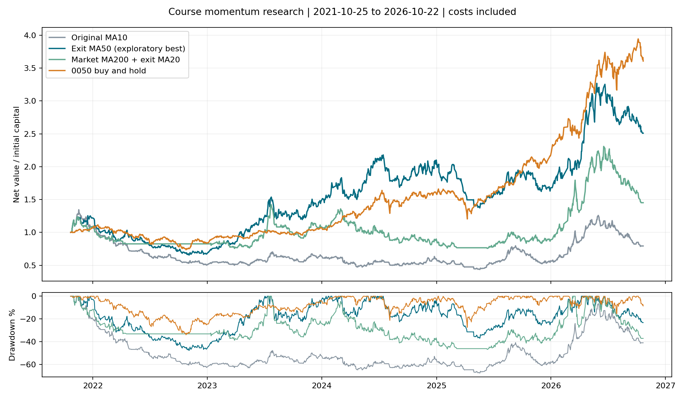

已完成深入比較。較慢出場改善歷史結果，但最高版本仍落後 0050，尚未取得實盤資格。全部 20 組與詳細診斷

已完成 20 組固定機制比較、四輪逐年選擇、逐筆成本歸因、條件重疊、5／20 日訊號報酬及指定成本壓力情境。這輪最明顯的改善方向是放慢出場；單純增加條件數未產生可靠優勢。所有期間已在先前研究使用過，以下皆為探索結果。
共同期間 2021-10-25～2026-10-22。手續費、稅與每邊 0.1% 滑價已計入；固定五個名額、無槓桿、隔日開盤估算，7% 停損立即生效。
| 版本 | 五年淨報酬 | 年化 | 最大回撤 | 平倉筆數 | 年單邊周轉 |
|---|---|---|---|---|---|
| 第一版 MA10 出場 | −20.67% | −4.53% | −67.64% | 573 | 22.4 倍 |
| MA10 連續兩日確認 | −25.50% | −5.73% | −69.27% | 508 | 19.9 倍 |
| MA20 出場 | +1.95% | +0.39% | −65.55% | 383 | 14.7 倍 |
| MA20 連續兩日確認 | +26.26% | +4.78% | −55.76% | 350 | 13.2 倍 |
| MA50 出場 | +150.98% | +20.25% | −47.75% | 214 | 7.5 倍 |
| 大盤 MA200 濾網 + 個股 MA20 | +45.17% | +7.75% | −46.81% | 306 | 12.2 倍 |
| 先按符合條件數排序 | −9.64% | −2.01% | −62.46% | 576 | 22.6 倍 |
| 0050 持有 | +260.68% | +29.31% | −33.96% | 期末未平倉 | — |
MA50 是本輪 20 組中歷史報酬最高者，並非全域最佳或已確認的有效策略。它仍落後 0050、回撤更大；配對日報酬差的區塊重抽樣區間也跨過零。MA50 是自訂研究替代方案，課程常用波段出場仍是事先選定的 MA5／MA10；不可把此結果稱為重現作者。
每邊滑價改為 0.3% 時，事前指定的第一版為 −49.88%，大盤 MA200 + 個股 MA20 為 +19.53%。本輪未額外針對看到績效後的 MA50 增加參數搜尋或壓力情境，不能假稱它也已通過該壓力檢驗。
第一版的 573 筆平倉按相同單位、相同時點精確拆解：
以上是原交易的成本歸因，不是重新跑出來的零成本複利帳戶。中位持有期間僅六個交易日；205 次一般停損和 20 次跳空停損合計淨損約 234.36 萬，348 次均線出場合計淨利約 213.70 萬。停損在管理單筆風險，不能由損益分類推論「移除停損就會改善」。
以進場訊號日的大盤位置分組，0050 未高於 MA200 時進場的 118 筆交易合計虧 261,817 元；高於 MA200 的 455 筆合計賺 55,156 元。這支持研究市場環境，但只是事後歸因；濾掉交易會改變後續資金分配，不能直接把前一組虧損加回報酬。
較慢均線的改善與較少周轉同時出現，但不能僅憑這些比較就說明確找到因果關係。MA10 加兩日確認反而變差，亦證明「少交易」本身不保證更好。
七個篩選器中，投信剛買準突破、投信連買、外資剛買，在這套聯集裡沒有任何獨有候選：移除其中任一個，聯集的候選集合不變。它們仍可作額外檢查，但不是新增三份獨立證據。
突破進場已規定量增至少 1.2 倍，量能的 10 分對所有合格候選都是常數。真正有變化的排序來自動能與兩種法人加分。
以隔日開盤買入、持有 20 個交易日至收盤的完整資料樣本計算，扣費後正報酬比例為：
| 符合條件數 | 股票日樣本數 | 歷史正報酬比例 |
|---|---|---|
| 1 個 | 1,046 | 44.65% |
| 2 個 | 1,675 | 43.76% |
| 3 個 | 820 | 47.07% |
| 4 個以上 | 681 | 44.49% |
沒有出現隨條件數增加而持續上升的關係。這些訊號有時間重疊、族群與市場差異，且排除了缺價與開盤跳空等情況；不是隨機對照，也不能直接當成明日上漲機率。全體原始合格訊號有 5,235 個股票日，20 日分析保留 4,222 個；排除樣本不能假裝不存在。
每年只讀此前訓練摘要，在 19 組候選中要求年化報酬為正且至少 20 筆平倉，再依「年化 − 0.5×回撤絕對值」選擇；法人延遲情境不參與選擇。沒有合格版本時保留現金。
| 評估年 | 年初選擇 | 當年淨報酬 |
|---|---|---|
| 2023 | 現金 | 0.00% |
| 2024 | MA50 | +34.79% |
| 2025 | MA50 | −18.58% |
| 2026 至 10/22 | MA50 | +58.97% |
各年獨立本金並扣年末估計清算成本後，標準化串接為 +74.46%、最大回撤 −36.02%；同起訖日 0050 持有為 +331.13%、最大回撤 −27.48%。這不是連續實盤交割帳本。全部資料早已看過，因此只稱時間順序重播，不能重新標記成全新樣本外驗證。
法人資料延後一個交易日，第一版五年報酬變為 −56.32%。這顯示策略對法人時點很敏感，沒有證明原資料一定偷看未來；需要首次發布與修訂歷程才能確認可用時間。
本輪四個單策略案例最初遇到威剛 3260 在 2025-10-01 的零價量而中止。依櫃買停牌公告及期交所復牌公文確認當日停牌、次日復牌，僅補持倉估值。規格、行情、策略參數及原始引擎均未改。修正前 103 次評估含 8 次中止，修正後 103 次全部完成；兩輪紀錄保留，原先成功案例結果維持不變。
另檢查均線缺值：第一版有 11／4,003 個持倉收盤觀測缺 MA10，MA50 有 55／5,211 個觀測缺 MA50，分別影響 1、2 筆交易。這些日子硬停損照常生效，但不能執行缺值的均線出場。未另以填值方式美化結果；這也是 MA50 尚需確認的模型限制。
| 課程環節 | 本輪實作 | 尚未完整表達的部分 |
|---|---|---|
| 市場天氣 | 0050 MA5／OSC；另比較長均線 | 加權與櫃買分開判讀、漲停家數與市場廣度 |
| 動能 | 公開的自訂百分位公式 | 作者未公開權重、週期與轉換 |
| 型態 | 前 40 日高價突破、量增 | 箱型品質、盤整長度、是否已漲多、初次發動的人工判斷 |
| 籌碼 | 外資／投信淨買超與估計金額 | 首次公布時點、券商成本與完整籌碼脈絡 |
| 基本面／事件 | 未加入事後可知的消息 | 營收、法說、公司事件、產業趨勢的逐日可得資料 |
| 出場 | 固定停損與均線變體 | 箱型失效、進場紅 K 中段、異常量價等替代方案 |
原字幕與講義已回查；上述未實作項不能由「更多條件」自動補足。歷史下市母體、公司行動現金時點、真實整數股、排隊與成交容量等原有缺口也仍存在。
方法參考：Bailey 等，The Probability of Backtest Overfitting。本報告公開所有嘗試與時間切分；未宣稱已計算 PBO、消除多重比較偏誤或找到保證獲利策略。
python scripts/research_course_deep.py
python -m pytest tests/test_course_bundle.py tests/test_course_deep_research.py -q
需保留 .cache/course-bundle-20261028、原始歷史身分證據、plan-freeze.json 與修正前報告。已有結果時核對 hash，不重新試驗。artifacts/course_deep_20261028 保存交付報告、逐筆資料與驗收資訊。沒有修改 .env、原策略、實盤帳本或課程原件。